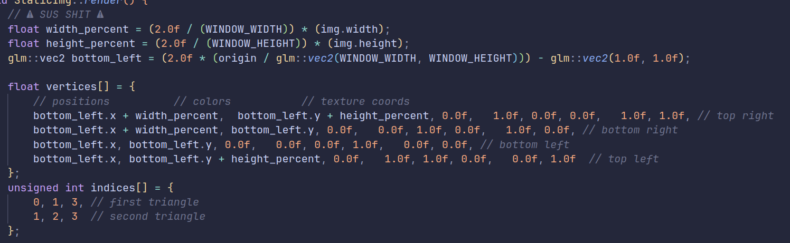

I. Sprite Positioning
I hate linear algebra. 😡. I couldn't get the matrix transformations to work for our sprite rendering. So I made something terrible that works.
We were able to merge this with Ted's inventory code and now display an inventory at the bottom of the screen.
Uh oh, it's tiny. 😫 (And doesn't scale with different screen sizes...). I'll need to take a second pass at this eventually. But it's good enough for now.
II. 1001 Ways to Die in the Maze
After getting the GUI finalized, after our meeting we split up the remaining tasks for the MVP, and I volunteered to start working on traps.
I may have implemented a lot of traps. Players can thank me later.
Ceiling "Spike" Traps
Fireball Shooting Trap
Arrow Shooting Trap & Floor Spike Trap
This was the majority of my week, and there will still likely need to be a lot of tuning on the traps to balance them. But overall I am very happy with how they turned out. 😊
III. Network Optimization
After only 2 hours of work I was able to optimize the networking code to split its update packets into chunks of 200 objects, preventing crashes if the maze was larger than our 10MB recv buffer. Then, I made it so after the initial load the server only sends updates for objects that changed.
It was surprisingly not hard at all! The only bug was I forgot to mark both objects in a collision as "updated", so when you picked up a potion the game wouldn't send down the updated version of the potion that was no longer on the ground. That wasn't hard to fix. 😊😊
IV. Randomly Generated Mazes
Everything up until this point took me to Tuesday morning at our guest lecture. Afterwards we had an impromptu group meeting where we talked about a lot of ideas we were having. One thing I pitched was a plan I had been cooking in the back of my head to do basic random generation for the mazes. Everyone thought it was a cool idea, so I went about implementing it.
It took me over 5 hours of work before I even had anything "working". I went through probably 5 different architectures before I finally settled on the final version.
At a high level, the algorithm works by loading in a collection of 10x10, 20x20, and 40x40 maze rooms which can be fully customized and designed by one of us. It then orchestrates this collection of rooms into a randomly generated maze. I thought this would be good for a number of reasons:
- It would actually make level design easier. Instead of one person having to design an entire maze from scratch, it could be a group effort with everyone contributing unique rooms with their own themes and traps and concepts.
- It isn't all or nothing. We can easily output our generated maze files as ascii files that can then be fed back into the program using the original maze loading code. This is probably what we'll do at the demo: generate a set of random mazes, verify that they are interesting and possible, and then use our favorites for the demo.
- Continuing with the previous point, even if this whole experiment blew up and we got mazes that 50% of the time were impossible, someone could still go back and use it as a template to design a big maze. We can still even do this if the mazes are always possible, if we want to spice them up a bit for the demo.
When we are designing rooms, they all have to be based off one of these three templates, based off of the desired size.
####..#### #........# #........# #........# .......... .......... #........# #........# #........# ####..####
####..########..#### #..................# #..................# #..................# .................... .................... #..................# #..................# #..................# #..................# #..................# #..................# #..................# #..................# .................... .................... #..................# #..................# #..................# ####..########..####
####..########..########..########..#### #......................................# #......................................# #......................................# ........................................ ........................................ #......................................# #......................................# #......................................# #......................................# #......................................# #......................................# #......................................# #......................................# ........................................ ........................................ #......................................# #......................................# #......................................# #......................................# #......................................# #......................................# #......................................# #......................................# ........................................ ........................................ #......................................# #......................................# #......................................# #......................................# #......................................# #......................................# #......................................# #......................................# ........................................ ........................................ #......................................# #......................................# #......................................# ####..########..########..########..####There are only a couple of rules you have to follow when designing rooms:
- A room must be fully connected, i.e. entering from any entrypoint you should be able to exit from any other entrypoint.
- The position of entry/exit points is standardized, so you cannot have an entry or exit elsewhere along the edge.
- If you close off an entryway on one side, you must close off all of that side's entryways
Rule 1 and 2 are pretty restricive, but rule 3 actually gives a lot of flexibility when designing rooms. It did make the algorithm more complex because it has to keep track of which entrypoints each room has, and correctly place them, but I think the extra effort was worth it.
Beyond this there are various classes of rooms, which are specified by the file extension of a room file. For example, to classify a room as "easy" you make the file extension .easy. This is the only extra manual annoation the designer has to do besides creating the maze itself. The program can detect the room size and entrypoints on its own.
All of the current classes of rooms are (and these are very much subject to change):
- Empty (for testing)
- Spawn
- Easy
- Medium
- Hard
- Loot
- Exit
The pseudocode of the current algorithm is as follows:
Place the spawn room at (0,0)
For each outgoing edge from the spawn room, append (new_coordinate, required_entryway) to the Frontier
While the frontier is not empty AND we have placed less than 30 rooms:
Pop the front of the Frontier (queue)
Pull a random easy room
Calculate all possible orientations to attach this random room to the frontier (new_coordinate, required_entryway)
If it is possible, place the room while appending new outgoing edges to the Frontier
If it is not possible, repull another random room and try again.
Note that it also does not currently place an exit, but with how the frontier is set up (and seems to be working) it
should just fit into the same framework except we specifically pull an Exit room.
One thing I will need to solve is the case when the maze terminates when the frontier is empty. This could potentially mean that the maze is super small, and there wouldn't be a place to put an exit. I will have to think of a good way to solve this.
Here are a collection of mazes made throughout various phases of the algorithm:

a & b != 0is actually evaluated as
a & (b != 0)instead of
(a & b) != 0like a sane person, I was able to get a real generated maze! 😊😊!! Note at this point I was only placing 10x10 rooms, and it was only selecting from hallways leading the maze to be very much full of walls. But this proves that the entrypoint calculation was working correctly
I then tried to make a big big maze . Holy crap, that looks cool! I should probably make sure this can be loaded in the game now that we have optimized collision detection and networking!